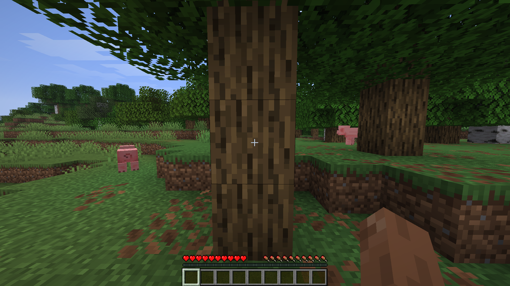
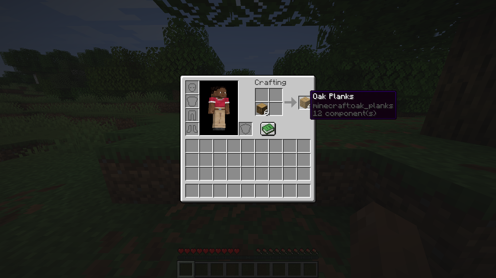
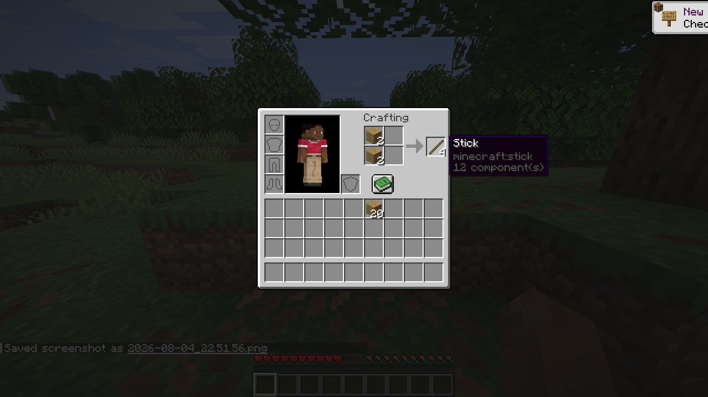
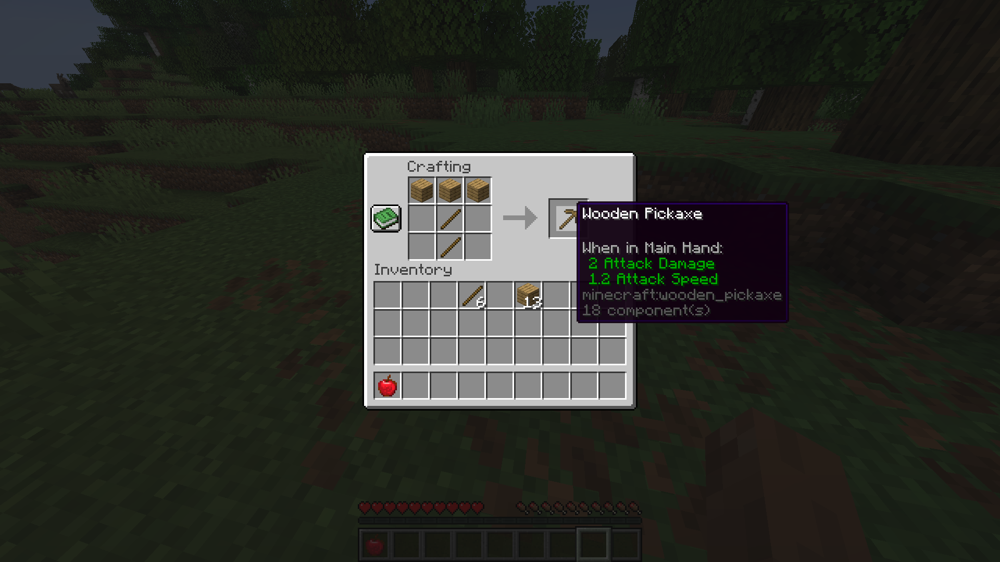
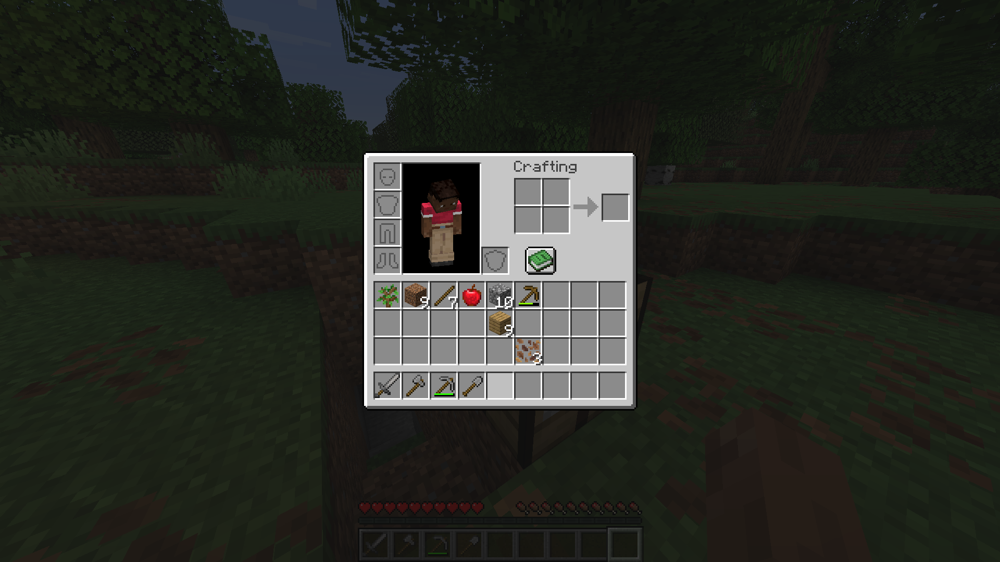

5 Essential Tips to Survive Your First Night in Minecraft
BeginnerAbout 1 minVersion-independent

Starting a new world is exciting, but the first night can be brutal. To stay alive when the sun goes down, follow these quick steps.
-
Collect wood
Punch trees to collect wood logs, then craft them into planks and sticks.



-
Craft tools
Make basic tools like a wooden pickaxe and upgrade them to stone tools as soon as possible.



-
Stay fed
Collect food by hunting animals or farming crops to maintain your health.


-
Build a shelter
Use wood to create a simple shelter to protect yourself from mobs. Craft a chest for storage, a furnace for cooking or smelting ores, and a bed to skip the night and set your spawn.


-
Light up your area
Craft torches using coal and sticks to prevent hostile mobs from spawning.